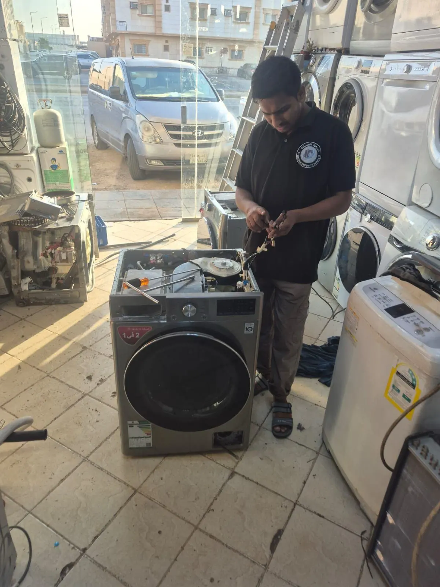

Washing Machine Repair in Al Arid, Riyadh
Riyadh summers are hard on appliances. If your automatic washing machine in Al Arid is faulty, we visit your home to diagnose it. Below is how heat and dust affect machines, and the habits that help.
Published by Automatic Washing Machine Repair · Last updated: November 2026
This page is part of our guide to Automatic Washing Machine Repair in Riyadh.

What does summer heat do to a washing machine?
Many homes keep the machine on a balcony, on a roof or in a small utility room with little air. When the space gets very hot, the machine works in those conditions all day. Heat does not break a machine overnight, but it is hard on plastic, rubber and electronics over time.
Our area guide pairs Al Arid with Al Malqa in the north, and the advice below applies to both.
- Rubber door seals and hoses can dry out and crack faster.
- Control boards do not like heat or trapped moisture.
- Hot water standing in hoses and plastic parts can cause wear.
- A closed, airless room keeps damp air inside after each wash.
What does dust do?
Fine dust settles on everything in Riyadh. On a washing machine it collects around the back vents, the detergent drawer and the drain filter. A thin layer is harmless, but a thick layer mixed with lint and detergent can clog small passages and make the drawer sticky. Dust can also settle on the outside of the control panel and slowly work its way into buttons.
- Wipe the outside of the machine and the control panel with a slightly damp cloth.
- Clean the detergent drawer so powder and dust do not set into a crust.
- Keep the back of the machine reachable, so dust does not pile up behind it.
How should I look after a machine on a balcony?
If the machine must stay outside or in a semi-open area, give it a little protection. A properly fitted cover when the machine is not in use keeps dust and direct sun off the body. Do not cover a machine that is switched on or still warm, because trapped heat is the opposite of what you want.
| Habit | Why it helps |
|---|---|
| Leave the door ajar after washing | Lets moisture escape, which cuts musty smells |
| Wipe the door seal now and then | Removes lint and residue that can build up |
| Close the tap when you are away | Protects against a hose burst while the home is empty |
| Avoid the hottest hours for long loads | Gives the machine an easier working day |
Which early signs show heat or dust damage?
Small signs show up before a breakdown. Catching them early often keeps a repair simple.
- The door seal feels hard or shows fine cracks.
- The detergent drawer is sticky or crusted.
- Lint is packed around the back vents or the drain filter.
- The buttons respond slowly or only at some presses.
- A damp smell stays after the door is left open.
What will the technician look at on a machine working in the heat?
Expect questions about where the machine stands and how hot that spot gets. The technician then looks at the condition of the seals and hoses, the vents, and the drain filter. If the machine resets or stops in the middle of a cycle, the electronics come next. Hot weather is a clue, not a diagnosis, so the actual fault is confirmed on site.
What should I write down before I call?
Note the room, whether the spot is shaded, and what the machine did before it stopped. Add a photo of the area around the machine if it is dusty or crowded. This helps us prepare for the visit.
When is it time to call a technician?
Call when you see cracked rubber, a burning smell, repeated error messages or a machine that stops mid-cycle. Unplug it and close the tap first. Our maintenance checklist and the guide on how to clean a washing machine can help in the meantime.
We rate 4.8 on Google from 264 reviews. A technician visits your home, tells you the fault and the cost first, and only starts once you agree. Parts and labor have a 30-day warranty.
Frequently Asked Questions
Many people do, but it is harder on the machine. Keep it shaded where possible, keep the area dry, and clean the dust off the outside regularly.
Warm, damp air stays trapped inside when the door is shut. Leave the door ajar after washing and wipe the seal. See the cleaning guide for more.
It can contribute, for example by blocking a filter or a drain. Error meanings vary by model, so check your manual and send us the model and the code.
Yes. Small faults are often easier to fix when they are caught early.
Book a visit in Al Arid
Describe the problem and tell us where the machine is kept. Call or WhatsApp us on +966 59 116 1916.